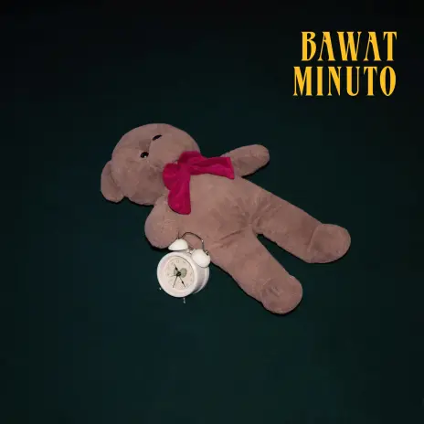

[Verse 1]
Sa mundong ito
Para tayong mga ibon na lumilipad
Sa kahel na kalangitan
Na walang ginagawa kung di ang magmahal
Madilim na buhay pa rin ang mundo
Tulad ng pagmamahal ko sa'yo hindi napupundi
Lumalapit bumabalik sa'yo, sa'yo
[Chorus]
Gusto kitang makasama buong gabi
Nakahigang nakaharap sa mga bituin
Hinihintay ang kinabukasan
Tayong dalawa lang sa istoryang ito
[Verse 2]
Sa mundong ito
Ang ganda ng mga bituin
Ngunit sa'yong sa'yo lang ako nakatingin
Mga kilos mo'y aking nasisilayan
Ako ba'y lumilipad na naman?
[Chorus]
Gusto kitang makasama buong gabi
Nakahigang nakaharap sa mga bituin
Hinihintay ang kinabukasan
Tayo lang ba sa istoryang ito?
You might also like
Say You Won’t Let Go
James Arthur
[Bridge]
Pwede bang makasama ka kahit na sandali?
Pwede bang makasama ka kahit 'di nakapikit?
Kahit na 'di buong gabi basta't hindi lang sa panaginip
Panaginip
[Chorus]
Gusto kitang makasama buong gabi
Nakahigang nakaharap sa mga bituin
Hinihintay ang kinabukasan
Ako lang pala sa istoryang ito
Gusto kitang makasama buong gabi
Nakahigang nakaharap sa mga bituin
Hinihintay ang kinabukasan
Ako lang pala sa istoryang ito
 |
 |  |